5.1 Complex functions of a real variable
(See also Section 12.7 -- phase portraits in Chebfun2.)
One of the attractive features of MATLAB is that it handles complex arithmetic well. For example, here are $20$ points on the upper half of the unit circle in the complex plane:
MS = 'markersize'; s = linspace(0,pi,20); f = exp(1i*s); plot(f,'.',MS,10) axis equal
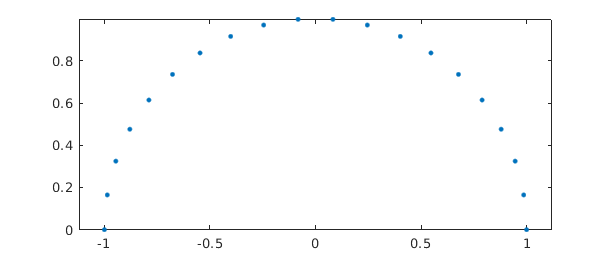
In MATLAB, both the variables i and j are initialized as $i$, the square root of $-1$, but this code uses 1i instead (just as one might write, for example, 3+2i or 2.2-1.1i). Writing the imaginary unit in this fashion is a common trick among MATLAB programmers, for it avoids the risk of surprises caused by i or j having been overwritten by other values. The axis equal command ensures that the real and imaginary axes are scaled equally.
Here is a Chebfun analogue.
s = chebfun(@(s) s,[0 pi]); f = exp(1i*s); plot(f) axis equal
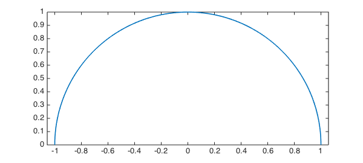
The Chebfun semicircle is represented by a polynomial of low degree:
length(f) plot(f,'.-',MS,10) axis equal
ans =
17
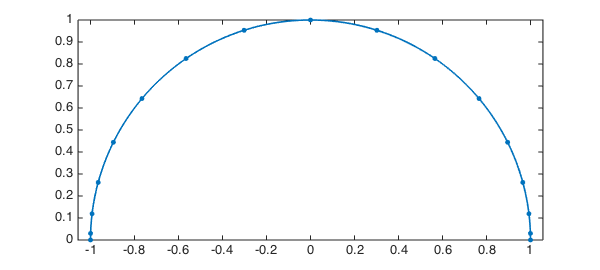
We can have fun with variations on the theme:
subplot(1,2,1), g = s*exp(10i*s); plot(g), axis equal subplot(1,2,2), h = exp(2i*s)+.3*exp(20i*s); plot(h), axis equal
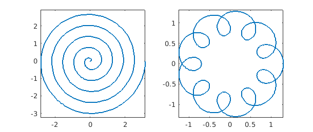
subplot(1,2,1), plot(g^2), axis equal subplot(1,2,2), plot(exp(h)), axis equal
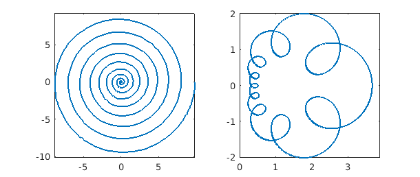
Such plots make pretty pictures, but as always with Chebfun, the underlying operations involve precise mathematics carried out to many digits of accuracy. For example, the integral of g is $-\pi i/10$,
sum(g)
ans = -0.000000000000001 - 0.314159265358979i
and the integral of h is zero:
sum(h)
ans =
-1.735976283877335e-16 - 1.386525845166201e-16i
Piecewise smooth complex chebfuns are also possible. For example, the following starts from a chebfun z defined as $(1+0.5i)s$ for $s$ on the interval $[0,1]$ and $1+0.5i-2(s-1)$ for $s$ on the interval $[1,2]$.
z = chebfun({@(s) (1+.5i)*s, @(s) 1+.5i-2*(s-1)},[0 1 2]);
subplot(1,2,1), plot(z), axis equal, grid on
subplot(1,2,2), plot(z^2), axis equal, grid on
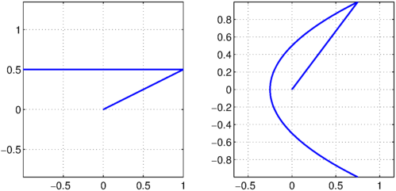
Actually, this way of constructing a piecewise chebfun is rather clumsy. An easier method is to use the join command, in which a construction like join(f,g,h) constructs a single chebfun with the same values as f, g, and h, but on a domain concatenated together. Thus if the domains of f, g, h are $[a,b]$, $[c,d]$, and $[e,f]$, then join(f,g,h) has three pieces with domains $[a,b]$, $[b,b+(d-c)]$, $[b+(d-c),b+(d-c)+(f-e)]$. Using this trick, we can construct the chebfun z above in the following alternative manner:
s = chebfun(@(s) s,[0 1]); zz = join((1+.5i)*s, 1+.5i-2*s); norm(z-zz)
ans =
0
5.2 Analytic functions and conformal maps
A function is analytic if it is differentiable in the complex sense, or equivalently, if it has a convergent Taylor series near each point in its domain of definition. Analytic functions do interesting things in the complex plane. In particular, away from points where the derivative is zero, they are conformal maps, which means that although they may scale and rotate an infinitesimal region, they preserve angles between intersecting curves.
For example, suppose we define R to be a chebfun corresponding to the four sides of a rectangle and we define X to be another chebfun corresponding to a cross inside R.
s = chebfun('s',[0 1]);
R = join(1+s, 2+2i*s, 2+2i-s, 1+2i-2i*s);
LW = 'linewidth'; lw1 = 1.5; lw2 = 2.2;
clf, subplot(1,2,1), plot(R,LW,lw2), grid on, axis equal
X = join(1.3+1.5i+.4*s, 1.5+1.3i+.4i*s);
hold on, plot(X,'r',LW,lw2)

Here we see what happens to R and X under the maps $z^2$ and $\exp(z)$:
clf subplot(1,2,1), plot(R^2,LW,lw1), grid on, axis equal hold on, plot(X^2,'r',LW,lw2) subplot(1,2,2), plot(exp(R),LW,lw1), grid on, axis equal hold on, plot(exp(X),'r',LW,lw2)
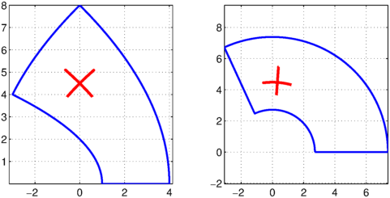
We can take the same idea further and construct a grid in the complex plane, each segment of which is a piece of a chebfun that happens to be linear. In this case we accumulate the various pieces as successive columns of a quasimatrix, i.e., a "matrix" whose columns are chebfuns (see Chapter 6).
x = chebfun(@(x) x);
S = chebfun; % make an empty chebfun
for d = -1:.2:1
S = [S d+1i*x 1i*d+x]; % add 2 more lines to the collection
end
clf,
subplot(1,2,1), plot(S), axis equal
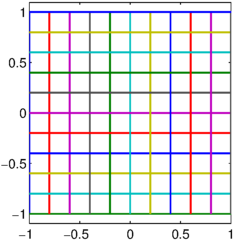
Here are the exponential and tangent of the grid:
subplot(1,2,1), plot(exp(S)), axis equal subplot(1,2,2), plot(tan(S)), axis equal
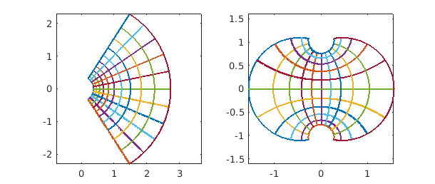
Here is a sequence that puts all three images together on a single scale:
clf plot(S), hold on plot(1.6+exp(S)) plot(6.6+tan(S)) axis equal, axis off
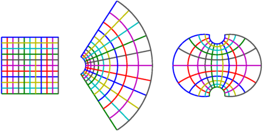
A particularly interesting set of conformal maps are the Moebius transformations, the rational functions of the form $(az+b)/(cz+d)$ for constants $a,b,c,d$. For example, here is a square and its image under the map $w = 1/(1+z)$, and the image of the image under the same map, and the image of the image of the image. We also plot the limit point given by the equation $z = 1/(1+z)$, i.e., $z = (\sqrt{5}-1)/2$.
moebius = @(z) 1/(1+z); s = chebfun(@(s) s,[0 1]); S = join(-.5i+s, 1-.5i+1i*s, 1+.5i-s, .5i-1i*s); clf for j = 1:3 S = [S moebius(S(:,j))]; end plot(S) hold on, axis equal plot((sqrt(5)-1)/2,0,'.k',MS,6)
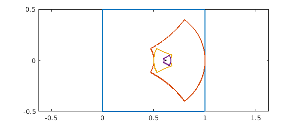
Here's a prettier version of the same image using the Chebfun fill command.
S = join(-.5i+s, 1-.5i+1i*s, 1+.5i-s, .5i-1i*s); clf fill(real(S),imag(S),[.5 .5 1]), axis equal, hold on S = moebius(S); fill(real(S),imag(S),[.5 1 .5]) S = moebius(S); fill(real(S),imag(S),[1 .5 .5]) S = moebius(S); fill(real(S),imag(S),[.5 1 1 ]) plot((sqrt(5)-1)/2,0,'.k',MS,6) axis off
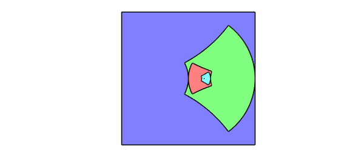
5.3 Contour integrals
If $s$ is a real parameter and $z(s)$ is a complex function of $s$, then we can define a contour integral in the complex plane like this: $$ \int f(z(s)) z'(s) ds . $$ The contour in question is the curve described by $z(s)$ as $s$ varies over its range.
For example, in the example at the end of Section 5.1 the contour consists of two straight segments that begin at $0$ and end at $-1+.5i$. We can compute the integral of $\exp(-z^2)$ over the contour like this:
f = exp(-z^2); I = sum(f*diff(z))
I = -0.842544559526136 + 0.166587147924074i
Notice how easily the contour integral is realized in Chebfun, even over a contour consisting of several pieces. This particular integral is related to the complex error function [Weideman 1994].
According to Cauchy's theorem, the integral of an analytic function around a closed curve is zero, or equivalently, the integral between two points $z_1$ and $z_2$ is path-independent. To verify this property, we can compute the same integral over the straight segment going directly from $0$ to $-1+0.5i$:
w = chebfun('(-1+.5i)*s',[0 1]);
f = exp(-w^2);
I2 = sum(f*diff(w))
I2 = -0.842544559526136 + 0.166587147924074i
A meromorphic function is a function that is analytic in a region of interest in the complex plane apart from possible poles. According to the Cauchy integral formula, $1/2\pi i$ times the integral of a meromorphic function $f$ around a closed contour is equal to the sum of the residues of $f$ associated with any poles it may have in the enclosed region. The residue of $f$ at a point $z_0$ is the coefficient of the degree $-1$ term in its Laurent expansion at $z_0$. For example, the function $\exp(z)/z^3$ has Laurent series $z^{-3} + z^{-2} + (1/2)z^{-1} + (1/6)z^0 +\dots$ at the origin, and so its residue there is $1/2$. We can confirm this by computing the contour integral around a circle:
z = chebfun('exp(1i*s)',[0 2*pi]);
f = exp(z)/z^3;
I = sum(f*diff(z))/(2i*pi)
I = 0.499999999999999 + 0.000000000000000i
Notice that we have just computed the degree $2$ Taylor coefficient of $\exp(z)$.
When Chebfun integrates around a circular contour like this, it does not automatically take advantage of the fact that the integrand is periodic. That would be Fourier analysis as opposed to Chebyshev analysis, and beginning with Version 5, a "trigfun" approach to such problems has been available, at least when the arguments are smooth (compare [Davis 1959]). For example, we could repeat the above calculation in Fourier mode like this:
z = chebfun('exp(1i*s)',[0 2*pi],'trig');
f = exp(z)/z^3;
I = sum(f*diff(z))/(2i*pi)
I = 0.500000000000000 - 0.000000000000000i
Chebyshev methods are more flexible, as a rule, but Fourier methods have advantages sometimes of efficiency (up to a factor of $\pi/2$ per dimension) and accuracy. For techniques that recover some of that factor of $\pi/2$ even for nonperiodic problems, see [Hale & Trefethen 2008].
The contour does not have to have radius $1$, or be centered at the origin:
z = chebfun('1+2*exp(1i*s)',[0 2*pi],'trig');
f = exp(z)/z^3;
I2 = sum(f*diff(z))/(2i*pi)
I2 = 0.500000000000001 + 0.000000000000000i
Nor does the contour have to be smooth. Here let us compute the same result by integration over a square (reverting to Chebyshev rather than Fourier technology).
s = chebfun('s',[-1 1]);
z = join(1+1i*s, 1i-s, -1-1i*s, -1i+s);
f = exp(z)/z^3;
I3 = sum(f*diff(z))/(2i*pi)
I3 = 0.500000000000000 - 0.000000000000000i
In Chebfun one can also construct more interesting contours of the kind that appear in complex variables texts. Here is an example involving a "keyhole" contour:
c = [-2+.05i, -.2+.05i, -.2-.05i, -2-.05i]; % 4 corners
s = chebfun('s',[0 1]);
z = join(c(1)+s*(c(2)-c(1)), c(2)*c(3).^s./c(2).^s, ...
c(3)+s*(c(4)-c(3)), c(4)*c(1).^s./c(4).^s);
clf, plot(z), axis equal, axis off
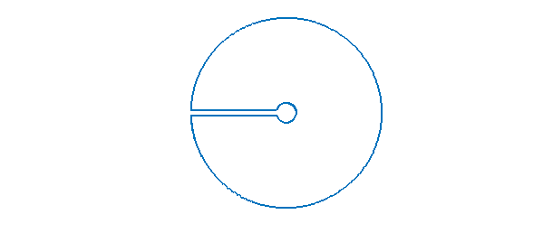
The integral of $f(z) = \log(z)\tanh(z)$ around this contour will be equal to $2\pi i$ times the sum of the residues at the poles of $f$ at $\pm \pi i/2$.
f = log(z)*tanh(z); I = sum(f*diff(z)) Iexact = 4i*pi*log(pi/2)
I = 0.000000000000002 + 5.674755637702217i Iexact = 0.000000000000000 + 5.674755637702224i
5.4 Cauchy integrals and locating zeros and poles
Here are some further examples of computations with Cauchy integrals. The Bernoulli number $B_k$ is $k!$ times the kth Taylor coefficient of $z/(\exp(z)-1)$. Here is $B_{10}$ compared with its exact value $5/66$.
k = 10;
z = chebfun('4*exp(1i*s)',[0 2*pi],'trig');
f = z/((exp(z)-1));
B10 = factorial(k)*sum((f/z^(k+1))*diff(z))/(2i*pi)
exact = 5/66
B10 = 0.075757575757575 + 0.000000000000001i exact = 0.075757575757576
Notice that we have taken z to be a circle of radius $4$. If the radius is $1$, the accuracy is a good deal lower:
z = chebfun('exp(1i*s)',[0 2*pi],'trig');
f = z/((exp(z)-1));
B10 = factorial(k)*sum((f/z^(k+1))*diff(z))/(2i*pi)
B10 = 0.075757574894396 + 0.000000000563654i
This problem of numerical instability would arise no matter how one calculated the integral over the unit circle; it is not the fault of Chebfun. For a study of how to pick the optimal radius, see [Bornemann 2009].
Another use of Cauchy integrals is to count zeros or poles of functions in specified regions. According to the principle of the argument, the number of zeros minus the number of poles of $f$ in a region is $$ N = {1\over 2\pi i} \int { f'(z) \over f(z)} dz, $$ where the integral is taken over the boundary. Since $f' = df/dz = (df/ds)(ds/dz)$, we can rewrite this as $$ N = {1\over 2\pi i} \int {1\over f} {df\over ds} ds. $$ For example, the function $f(z) = \sin(z)^3 + \cos(z)^3$ clearly has no poles; how many zeros does it have in the disk about $0$ of radius $2$? The following calculation shows that the answer is $3$:
z = chebfun('2*exp(1i*s)',[0 2*pi]);
f = sin(z)^3 + cos(z)^3;
N = sum((diff(f)./f))/(2i*pi)
N = 2.999999999999999 + 0.000000000000001i
What is really going on here is a calculation of the change of the argument of $f$ as the boundary is traversed. Another way to find that number is with the Chebfun overloads of the MATLAB commands angle and unwrap:
anglef = unwrap(angle(f)); N = (anglef(end)-anglef(0))/(2*pi)
N = 2.999999999999998
Variations on this idea enable one to locate zeros and poles as well as count them. For example, we can locate a single zero with the formula $$ r = {1\over 2\pi i} \int z (df/ds)/f ds $$ [McCune 1966]. Here is the zero of the function above in the unit disk:
z = chebfun('exp(1i*s)',[0 2*pi],'trig');
f = sin(z)^3 + cos(z)^3;
r = sum(z*(diff(f)/f))/(2i*pi)
r = -0.785398163397447 - 0.000000000000000i
We can check the result by a more ordinary Chebfun calculation:
x = chebfun('x');
f = sin(x)^3 + cos(x)^3;
r = roots(f)
r = -0.785398163397448
To find multiple zeros via Cauchy integrals, and for many other generalizations of the ideas in this chapter, see [Austin, Kravanja & Trefethen 2013].
5.5 Alphabet soup
The Chebfun command scribble returns a piecewise linear complex chebfun corresponding to a word spelled out in capital letters. For example:
f = scribble('Oxford University');
LW = 'linewidth'; lw = 2;
plot(f,LW,lw), xlim(1.1*[-1 1]), axis equal
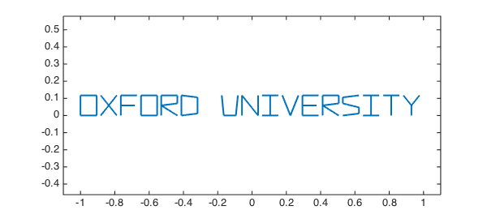
This chebfun happens to have 67 pieces:
length(domain(f))-1
ans =
67
Though its applications are unlikely to be mathematical, $f$ is a precisely defined mathematical object just like any other chebfun. If we wish, we can compute with it:
f(0), norm(f)
ans = 0.129411764705882 ans = 0.847576500999202
Perhaps more interesting is that we can apply functions to it and learn something in the process:
plot(exp(3i*f),'m',LW,lw), ylim(1.2*[-1 1]), axis equal
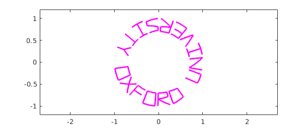
Does putting a box around enhance the image? (We do this by adding a second column of a Chebfun quasimatrix -- see Chapter 6.)
L = f.ends(end); s = chebfun(@(x) 2*x+2,[-1 -0.5]); box = join(-1.1-.05i+2.2*s,1.1-.05i+.22i*s,1.1+.17i-2.2*s,-1.1+.17i-.22i*s); f = [f box]; plot(f,LW,lw), xlim(1.2*[-1 1]), axis equal
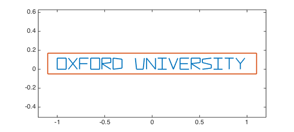
clf, plot(exp((1+.2i)*f),LW,lw), axis equal, axis off
plot(tan(f),LW,lw), axis equal, axis off
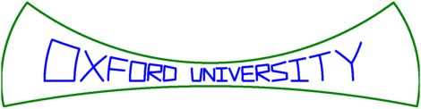
Next May 16, you might wish to write a greeting card for Pafnuty Lvovich Chebyshev, accurate as always to 15 digits:
f = scribble('Happy Birthday Pafnuty!');
L = f.ends(end);
g = @(z) exp(-2.2i+(2.5i+.4)*z);
clf, plot(g(f),'r',LW,lw)
circle = 1.12*chebfun(@(x) exp(2i*pi*x/L),[0 L]);
ellipse = 1.2*(circle + 1/circle)/2 + 1i*mean(imag(f));
hold on, plot(g(ellipse),'b',LW,lw)
axis auto equal off
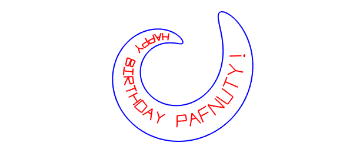
You can find an example "Birthday cards and analytic functions" in the Fun Stuff section of the Chebfun Examples collection, and further related explorations in the Geometry section. And here's another complex scribble:
clf
cheb.gallery('motto')
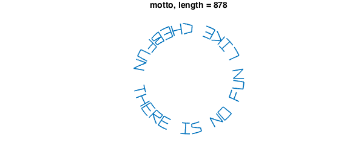
5.6 References
[Austin, Kravanja & Trefethen 2014] A. P. Austin, P. Kravanja, and L. N. Trefethen, "Numerical algorithms based on analytic function values at roots of unity", SIAM Journal on Numerical Analysis 52 (2014), 1795--1821.
[Bornemann 2009] F. Bornemann, "Accuracy and stability of computing high-order derivatives of analytic functions by Cauchy integrals", Foundations of Computational Mathematics, 11 (2011), 1-63.
[Davis 1959] P. J. Davis, "On the numerical integration of periodic analytic functions", in R. E. Langer, ed., On Numerical Integration, Math. Res. Ctr., U. of Wisconsin, 1959, pp. 45-59.
[Hale & Trefethen 2008] N. Hale and L. N. Trefethen, "New quadrature formulas from conformal maps", SIAM Journal on Numerical Analysis, 46 (2008), 930-948.
[McCune 1966] J. E. McCune, "Exact inversion of dispersion relations", Physics of Fluids, 9 (1966), 2082-2084.
[Weideman 1994] J. A. C. Weideman, "Computation of the complex error function", SIAM Journal on Numerical Analysis, 31 (1994), 1497-1518.